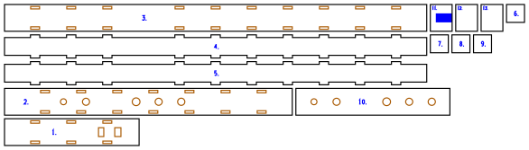

Square-bore flute
See all six variants, in 3D · Read the writeup
A five-hole minor-pentatonic flute in A4, in the Native American style, rebuilt in 3mm plywood with a square or rectangular bore. It keeps the bore area of a 7/8in (22.2mm) round-bore flute, 387mm², so the air column is the same in a section a laser can build. All closed it sounds A4; opening the holes from the foot up gives C5, D5, E5, G5 and A5.
Output is millimetre-true — 1 user unit = 1 mm with a physical width/height — so it prints and cuts at real size.
Nothing here has been cut or played yet. The holes and the foot come from an acoustic model, and the foot is cut long to be trimmed to pitch.
 |
| box-square-6 · the whole flute on one 586 × 167mm sheet |

Built for LaserMadeMusic.
The rest of the build files — every instrument, generator and tool, indexed.
The six variants
Three ways to build the bore, each with the finger holes in 3mm or 6mm of wall:
| Variant | Construction | Bore | Hole wall | Parts | Sheets | Joints |
|---|---|---|---|---|---|---|
box-square-3 |
finger-jointed box | 19.67 × 19.67mm | 3mm | 12 | 1 | the bird glued, the rest press-fit |
box-square-6 |
finger-jointed box | 19.67 × 19.67mm | 6mm | 13 | 1 | the doubler and the bird glued |
box-rect-3 |
finger-jointed box | 18.43 × 21mm | 3mm | 12 | 1 | the bird glued, the rest press-fit |
box-rect-6 |
finger-jointed box | 18.43 × 21mm | 6mm | 13 | 1 | the doubler and the bird glued |
stack-rect-3 |
laminated stack | 18.43 × 21mm | 3mm | 13 | 2 | every layer glued |
stack-rect-6 |
laminated stack | 18.43 × 21mm | 6mm | 14 | 2 | every layer glued |
- The box is four plates: the two sides are tabbed into the top and the bottom, and the plug is four discs pressed into the bore.
- The stack is a bottom layer, seven bore layers with the bore cut out of them and the plug left solid, and the top.
- The 6mm variants glue a 3mm doubler over the run of finger holes, so each hole has a 6mm chimney, as a wooden flute's wall would give it.
There is no laminated square bore. A stack is a whole number of 3mm layers deep, 18 or 21mm, and 19.67 is neither, so the stack keeps the area and gives up the square. box-rect is the stack's bore built as a box, so the two constructions can be compared at one section.
Every flute is about 469mm long and fits a 600 × 308mm bed.
What the model says
The bore's shape barely matters. The square and the 18.43 × 21mm rectangle put every hole within 0.1mm of each other. Box or stack is a building choice, not an acoustic one.
The wall's thickness matters most. With the holes in 6mm of wall instead of 3mm, every one of them sits 10–16mm nearer the window, because a hole's chimney is part of its length.
The holes are laid out for the hands. Five equal 8mm holes land 27, 30, 46 and 12mm apart, and two fingers will not cover holes 12mm apart. So the lower hand takes holes 1–3 and the upper hand 4–5, each hand's holes 25mm apart, and each hole is sized to its note:
| Holes in | Sound chamber | Hole 1, C5 | Hole 2, D5 | Hole 3, E5 | Hole 4, G5 | Hole 5, A5 |
|---|---|---|---|---|---|---|
| 3mm of wall | 328.9mm | 229.7 · ø7.7 | 204.7 · ø8.0 | 179.7 · ø9.2 | 129.4 · ø8.0 | 104.4 · ø6.2 |
| 6mm of wall | 327.2mm | 219.2 · ø8.1 | 194.2 · ø8.0 | 169.2 · ø8.7 | 113.7 · ø8.0 | 88.7 · ø6.8 |
Distances are from the centre of the window, in mm. Hole 1 is nearest the foot.
Before you cut
The window's end correction is not measured. It is the one term in the model worked out from physics rather than from a flute, and each 1mm of error in it moves the foot about 5.5mm. So the sound chamber is cut 15mm long: trim the foot until the flute sounds A4 with every hole closed. The hole positions depend on that term far less.
7/8in is a large bore for A4. Flutopedia's bore table puts A4 nearer 3/4in. This is the bore that was asked for, but most flutes in this key are narrower.
The flue is a fill engrave, 10mm wide, on the underside of the bottom bird layer. It wants to be about 1mm deep. That depth is a power setting, so find it on scrap first.
File the splitting edge by hand. The window's far edge, where the air splits, needs a clean bevel of about 30°, and a laser cuts square, charred edges. The top is cut as a short head plate and a long body plate, so a spoilt edge costs only the short one.
Cut it in 3mm Baltic birch plywood, at a 0.13mm kerf. The tabs are drawn 0.19mm tight along their length and 0.12mm across the ply, the mallet fit used on the lyre-harp. Press-fit, then seal every seam with shellac. The doubler, the bird's layers and every layer of the stack are glued.
Run the colours blue, orange, black: blue engraves the part numbers and the flue, orange cuts the holes, slots and windows, and black frees the parts. That is the sequence every LaserMadeMusic repository uses.
Tuning
- Tie the bird on over the exit hole, its front edge on the window's near edge. It is tied rather than glued, so it can be slid to voice the flute.
- With every hole closed, trim the foot until the flute sounds A4.
- Open hole 1 and tune C5. The holes are cut to the model's size, so if a note is flat, open its hole slightly with a file.
- Work up the flute in order, since each hole nudges the ones above it.
Regenerating it
python3 naf_model.py # the holes for every variant, printed
python3 naf_model.py --mouth=0.8 # with a different window correction
python3 square_flute.py --no-write # the generator's checks, writing nothing
python3 square_flute.py --out=cut-files # every variant into cut-files/<variant>/
python3 compare_page.py --standalone variants.htmlnaf_model.py is a transmission-matrix model, the standard way woodwind calculators predict pitch. It treats the bore as a lossy tube, using the section's area and its hydraulic radius, which is where a square differs from a circle. Each finger hole is Keefe's tone hole, open or closed. At the top, the window opens into the bore beside a short closed stub up to the plug.
square_flute.py builds each variant from what the model asks for and checks it before writing anything:
- every note within a cent of its target
- every part on the bed
- every hole inside the bore
- enough ply between neighbouring holes, and between a hole and a mortice
- the joint in the top clear of the window and the top hole
- every part placed on a sheet
It borrows the stroke font for its part numbers from ribbon_bore.py in trumpet-elbows-allowed, so it expects that repository cloned beside this one.
.repro holds the exact command for every file here.
Files
cut-files/box-square-3/square-flute-A4-box-square-3-sheet1-cut-files.svg |
box, square bore, 3mm hole wall |
cut-files/box-square-6/square-flute-A4-box-square-6-sheet1-cut-files.svg |
box, square bore, 6mm hole wall |
cut-files/box-rect-3/square-flute-A4-box-rect-3-sheet1-cut-files.svg |
box, 18.43 × 21mm bore, 3mm hole wall |
cut-files/box-rect-6/square-flute-A4-box-rect-6-sheet1-cut-files.svg |
box, 18.43 × 21mm bore, 6mm hole wall |
cut-files/stack-rect-3/square-flute-A4-stack-rect-3-sheet1-cut-files.svg |
stack, 3mm hole wall, sheet 1 of 2 |
cut-files/stack-rect-3/square-flute-A4-stack-rect-3-sheet2-cut-files.svg |
stack, 3mm hole wall, sheet 2 of 2 |
cut-files/stack-rect-6/square-flute-A4-stack-rect-6-sheet1-cut-files.svg |
stack, 6mm hole wall, sheet 1 of 2 |
cut-files/stack-rect-6/square-flute-A4-stack-rect-6-sheet2-cut-files.svg |
stack, 6mm hole wall, sheet 2 of 2 |
previews/ |
display renderings of every sheet — not cut files |
variants.html |
all six side by side, in 3D, with every sheet |
naf_model.py |
the acoustic model |
square_flute.py |
the generator |
compare_page.py |
builds variants.html |
README.md · index.html |
this writeup and its published page; the markdown is the source |
.repro |
the command that draws each shipped file |
Released under CC0 1.0.